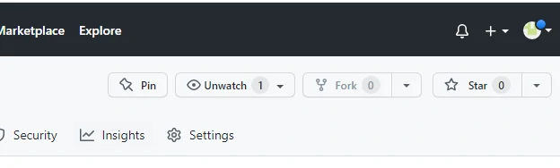
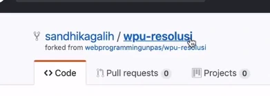
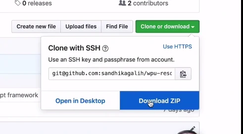
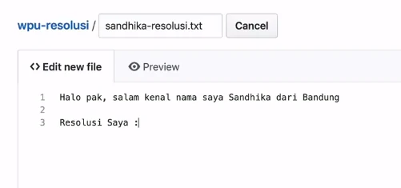
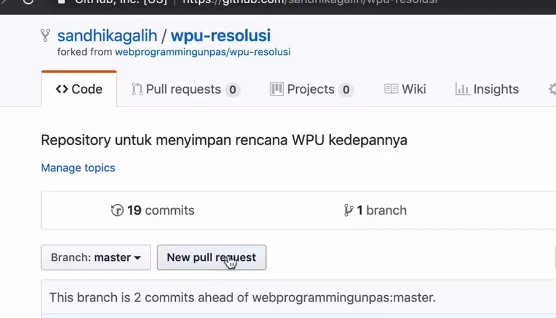
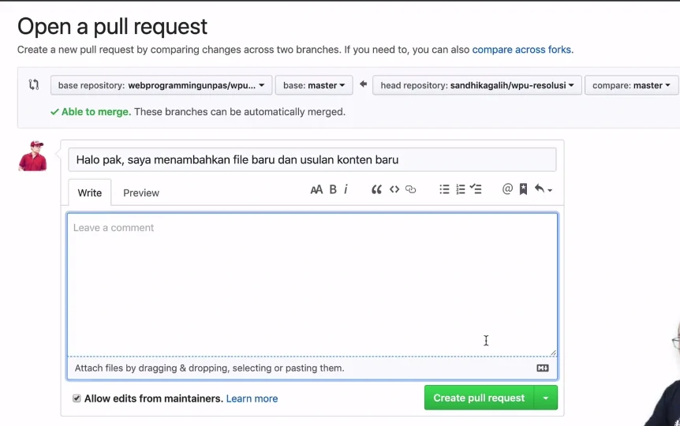
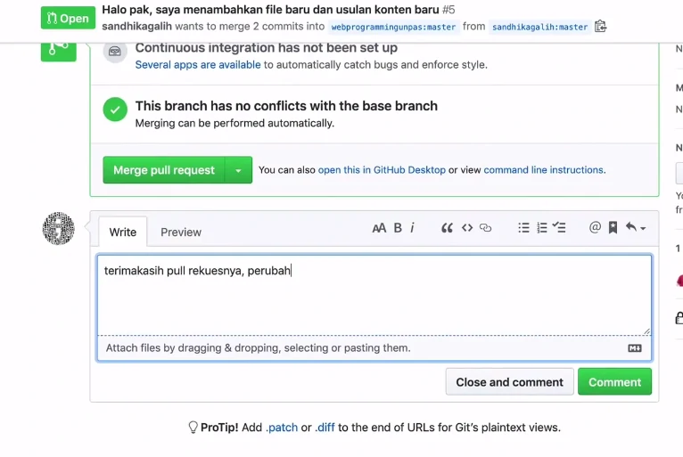

Fork / Forking
Intro
Membuat copy / duplikat dari repo orang lain
(berserta history-nya)
Jembatan antara repo original dan duplikatnya
Modifikasi terhadap repo original
Berkontribusi pada repo orang lain
Fork != Clone
Caranya
- masuk ke akun orang lain
- click fork

-
judulnya akan berubah dan akan ada keterangan difork
dari mana


- kita edit dulu repo nya

-
click tombol New pull request agar di pemilik
menerima perubahan request kita

- atur dari repo dan branch
- tambahkan judul dan comment
- jika sudah click Create pull request

-
lalu kita tunggu apakah akan diterima / tidak si pemilik
reponya
-
setelah itu kira merge pull request letaknya di pull
request
- jika ingin mengirim pesan bisa ke komentar
